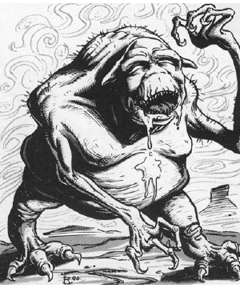

2118 • 2602
| Climate/Terrain: | The Abyss |
|---|---|
| Frequency: | Common |
| Organization: | Group |
| Activity Cycle: | Any |
| Diet: | Carnivore |
| Intelligence: | Low (5-7) |
| Treasure: | Nil |
| Alignment: | Chaotic evil |
| No. Appearing: | 4-40 |
| Armor Class: | 4 |
| Movement: | 9 |
| Hit Dice: | 2 |
| THAC0: | 19 |
| No. of Attacks: | 3 |
| Damage/Attack: | 1d4/1d4/1d4+1 |
| Special Attacks: | See below |
| Special Defenses: | See below |
| Magic Resistance: | 10% |
| Size: | S (3-4’ tall) |
| Morale: | Steady (11-12) |
| XP Value: | 1,400 |
Petty and wicked, dretches are the most common tanar’ri, found in massive hordes everywhere in the Abyss. Along with the manes, the dretches are the rank-and-file of the Blood War.
Dretches are gaunt, squat humanoids with rubbery, almost hairless bodies. Their skin is pale white to beige, giving way to sickly blue in some areas, stretched over pulsing varicose veins. Dretches’ mouths are slack and slobbery with many small fangs. Their hair is sparse and bristly, exposing pointed ears that hang limply from either side of the head. A dretch’s eyes slant downward and the nose appears squashed.
Dretches communicate using telepathy.
Combat: Only their vast numbers allow dretches to survive the rigors of the Abyss. These creatures will not flee combat if a greater or true tanar’ri is present. Dretches are so wretched they would rather die than fall further into disfavor by fleeing. Their natural attack form consists of a claw/claw/bite routine (1d4/1d4/1d4+1).
In addition to those available to all tanar’ri, dretches can use these spell-like abilities: scare, stinking cloud (once per day), and telekinesis. Once per day, they can attempt to gate in 1-4 dretches with a 50% chance of success. They like to gate in companions, then have the companions immediately attempt gates in turn, and so on until a vast horde of dretches appears.
Habitat/Society: Dretcbes are the lowest form of actual tanar’ri; their inferiors, the manes, are merely dead spirits from the Prime Material Plane. Dretches mill around and torment the manes to avoid considering their own lowly position.
Some dretches try to be extremely useful, hoping for promotion. Others consider themselves so lowly that they have nothing to lose, and they rebel. By virtue of their numbers, they feel they can go their own way and ignore the more powerful tanar’ri. This leads to a huge slaughter of the rebellious dretches by more powerful tanar’ri. These civil outbreaks temporarily divert the tanar’ri from the Blood War, sometimes with disastrous results.
Ecology: Dretches are important to the Blood War. The primary strength of the tanar’ri is their sheer numbers, and those numbers consist largely of dretches. Unlike the hordlings, they are actual tanar’ri and have concern for their position. This makes them more reliable than hordlings, if the term applies to any creature in the Abyss.
The dretches’ weakness makes them a perfect choice for food in an environment where food is scarce. Greater fiends eat them in great quantities.
◆ 1778 ◆